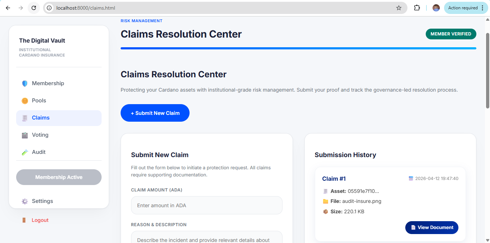

CoxyInsure User Help Documentation.
7. Submit and Track Claims
The Claims page allows users to submit a claim against an insured event and track previously submitted documents. This area combines document upload, description capture, on-chain claim transaction handling, and backend record storage.
7.1 Before You Submit a Claim
- Make sure the wallet has an active or valid cover where required by protocol rules.
- Prepare a clear supporting document such as an image or PDF.
- Write a concise claim description explaining the insured event.
7.2 Submit Claim Flow
- Open the Claims page.
- Select or upload the evidence document.
- Enter the claim description and required claim amount details.
- Submit the claim and approve the blockchain action if requested.
- Wait for the claim to appear in your submission history.
7.3 Claim History and Documents
The page should show the current wallet’s submitted claims, including document name, size, creation date, and a document view link. If the claim document opens in a new tab, the backend should serve the real file URL so the image or PDF is visible directly.
